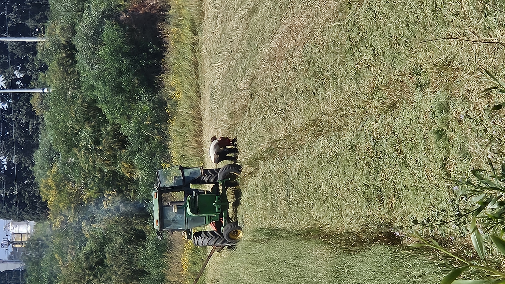
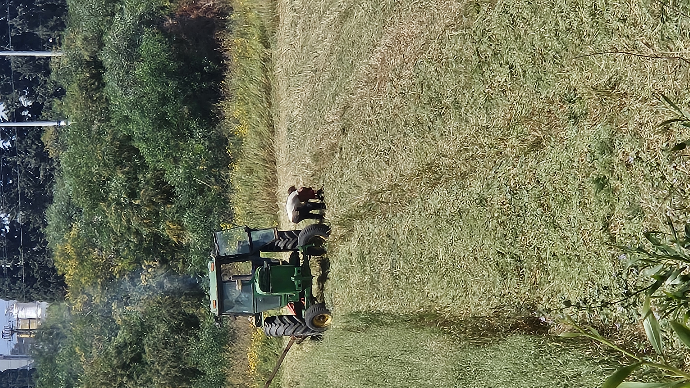
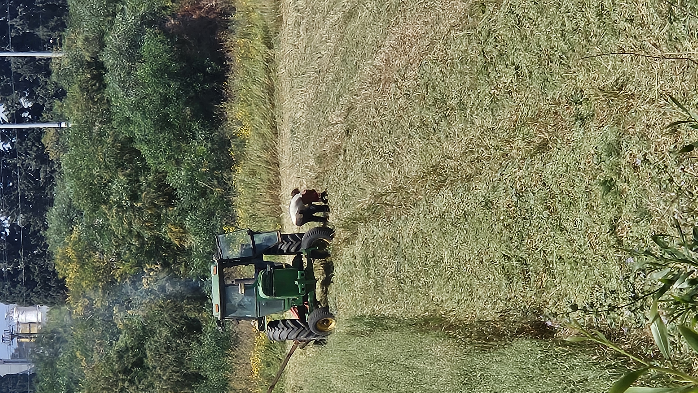

סיפור המשפחה שלנו - מהאדמה אל הלחם
בתחילת כל עונה, יוצאים לשטח עם הטרקטור כדי לפרק את האדמה, לסלק אבנים ולדשן...
הזרעים נזרעים בשורות ישרות, מדויקות...
משקים, עוקבים אחרי מזג האוויר, ודואגים שהכול גדל כמו שצריך...
הקציר הוא רגע השיא של העונה...
